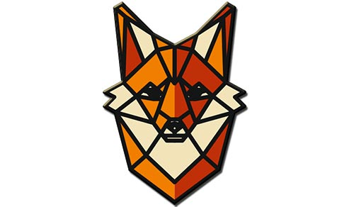

Paweł Jemielianiuk - Strona domowa - pozdro git Hub!
Kim jestem?
Nazywam się Paweł Jemielianiuk, mam 28 lat, obecnie odbywam kurs specjalistyczny w Szkole Policji w Pile
i zamierzam ten czas (3,5 miesiąca) poświęcić nauce, a podchodzę do kursu już 3 raz - wstyd się
przyznać!
Przejdź do opisu
Pamiętniczek
11.11.2019
W dniu Święta Niepodległości rozpocząłem swoją podróż do Piły, do miejsca gdzie spędzę najbliższe
miesiące na pogłębianiu wiedzy w zakresie swojej pracy. Ten czas chciałbym spędzić na owocnej nauce
nie tylko prawa ale również podstaw Frontendu, z którym mógłbym związać swoją dalszą karierę
życiową, oby tym razem się udało. Przyjechałem około godziny 21:00, nie wiem czy wcześniej był
rozplanowane pokoje czy automatycznie były przydzielane tym, którzy przyjeżdżali. Ja byłem jednym z
ostatnich i dostałem pokój numer 12. Zaszedłem i o dziwo byłem sam. Jak się później okazało,
zostałem sam do końca, miałem pokój na wyłączność ;)
12.11.2019
Pierwszy dzień szkoleniowy, który wcale nie był szkoleniowy - nie licząc zajęć z BHP i Ppoż. Większość czasu przesiedzieliśmy w pokojach. Nie żebym miał narzekać, ale myślałem, że ucząc się czas minie szybciej,. Nasza kompania liczy 46 osób. 46 osób z różnych zakamarków Polski. Są tacy, którzy do domu mają max 100 km, ale są i tacy jak ja - 600 km, a nawet 800 KM :O (Ustrzyki Dolne…..albo Górne) generalnie Bieszczady. Ciekawe czy ta dziewczyna jeździła kolejką - drezynami :D i czy była u dziada w Myczkowcach ;) Pierwszy dzień zawsze jest taki, taki dziwny. Każdy boi się odezwać, jest jakaś taka nieufność. Pewnie z czasem się to zmieni, zobaczymy. Przejdź do artykułu
13.11.2019
Drugi dzień, standardowo o 7 Apel i śniadanie, zajęcia od 8:30. Towarzystwo jest już bardziej rozmowne, a zajęcia nieznacznie inne niż poprzedniego dnia. Też jest zapoznanie z PSO, jak w szkole,trochę rozmów, trochę straszenia i opowiadania jak to było wcześniej. Obiad i wycieczka do Decathlonu po plecak, bo dzisiaj buty i stój na WF nosiłem w reklamówce ;). Przed kolacją zawiązało się spotkanie towarzyskie, ale trochę wymknęło się spod kontroli, na dwóch łózkach i 3 krzesłach siedziało z 15 osób, a co za tym idzie było mega głośno. Jestem ciekaw jak będzie wyglądał wieczorny apel :)
18.11.2019
Dzisiejszy dzień minął bardzo szybko i sprawnie. Rano odbyliśmy strzelanie, gdzie zajęcia trwały przez 5 godzin. Cała strzelnica jest zewnętrzna, więc na przyszłość trzeba się cieplej ubrać. Po tej wycieczce odbyliśmy 3 ghodziny prawa i tak zakończyliśmy ten poniedziałek. Po obiedzie przyszedł czas na krótką drzemkę, która wcale nie była krótka.
